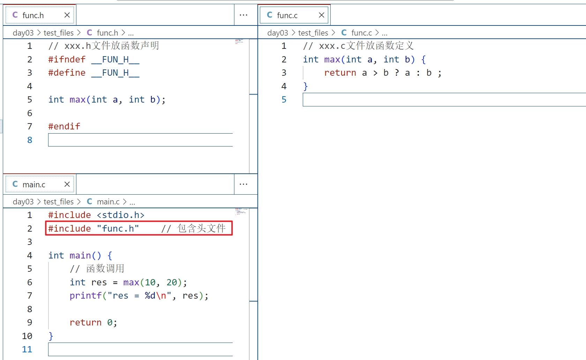

<!DOCTYPE lake>
<h1 data-lake-id="vBkfv" id="vBkfv"><span class="lake-fontsize-12" data-lake-id="u40c64803" id="u40c64803">多文件编程</span></h1><ul list="u099d66e8"><li data-lake-id="uadf60796" fid="udfd1bd40" id="uadf60796"><span data-lake-id="ueb62a1ea" id="ueb62a1ea">把函数声明放在头文件xxx.h中，在主函数中包含相应头文件</span></li><li data-lake-id="u6ed6e67a" fid="udfd1bd40" id="u6ed6e67a"><span data-lake-id="uba947355" id="uba947355">在头文件对应的xxx.c中，实现xxx.h声明的函数</span></li></ul><p data-lake-id="u3b469673" id="u3b469673" style="padding-left: 2em"></p><p data-lake-id="u7fd532bd" id="u7fd532bd"><br/></p><h1 data-lake-id="WsfjF" id="WsfjF"><span data-lake-id="u2bbca40a" id="u2bbca40a">防止头文件重复包含</span></h1><ul list="uff26c8f7"><li data-lake-id="u35ef1b76" fid="u82c051b7" id="u35ef1b76"><span data-lake-id="u45f6008c" id="u45f6008c">当一个项目比较大时，往往都是分文件，这时候有可能不小心把同一个头文件 include 多次，或者头文件嵌套包含。</span></li><li data-lake-id="ub05afd77" fid="u82c051b7" id="ub05afd77"><span data-lake-id="ufc323813" id="ufc323813">为了避免同一个文件被include多次，C/C++中有两种方式。</span></li><li data-lake-id="u32f624bd" fid="u82c051b7" id="u32f624bd"><span data-lake-id="u1d2fbeab" id="u1d2fbeab">方法一：</span></li></ul><span class="yuque-card-unsupported">[codeblock]</span><ul list="ub4f77b34"><li data-lake-id="u6dfe97fa" fid="ud7a66602" id="u6dfe97fa"><span data-lake-id="uaceb0a21" id="uaceb0a21">方法二：</span></li></ul><span class="yuque-card-unsupported">[codeblock]</span><h1 data-lake-id="SM5BA" id="SM5BA"><span data-lake-id="uf14b6fb5" id="uf14b6fb5">命令行编译程序</span></h1><blockquote data-lake-id="u65f9d925" id="u65f9d925"><p data-lake-id="u804af790" id="u804af790"><span data-lake-id="udd8a2bfe" id="udd8a2bfe">​</span><code data-lake-id="u2e8a1d13" id="u2e8a1d13"><span data-lake-id="uffc67120" id="uffc67120">gcc -g main.c func.c -o main.exe</span></code></p></blockquote><ul list="u7793d4cc"><li data-lake-id="u75e73611" fid="uaaa2ae4c" id="u75e73611"><span data-lake-id="u6f9d807b" id="u6f9d807b">-g  指定编译的文件，多个文件用空格隔开。注意：只需要编译c文件，h文件不需要加入进去；</span></li><li data-lake-id="u24de06de" fid="uaaa2ae4c" id="u24de06de"><span data-lake-id="u65fece94" id="u65fece94">-o  指定生成可执行文件的名字；</span></li></ul><p data-lake-id="u472aa917" id="u472aa917"><span data-lake-id="u57b53fd6" id="u57b53fd6">ps：命令行显示中文乱码，修改命令：</span><code data-lake-id="u42398575" id="u42398575"><span data-lake-id="ub4f2c0b9" id="ub4f2c0b9">chcp 65001</span></code></p><blockquote data-lake-id="uc19f5d5f" id="uc19f5d5f"><p data-lake-id="ub84394da" id="ub84394da"><span data-lake-id="u67a50b37" id="u67a50b37">如果需要改回默认编码： chcp 936  </span></p><p data-lake-id="uf5357526" id="uf5357526"><span data-lake-id="u3e8820c4" id="u3e8820c4">936 (GBK)  65001 (UTF-8)</span></p></blockquote><h1 data-lake-id="BFuIG" id="BFuIG"><span data-lake-id="u2788e8fa" id="u2788e8fa">头文件包含的区别</span></h1><ul list="u8ffd4a3e"><li data-lake-id="ue9bdd2ed" fid="u9f570729" id="ue9bdd2ed"><code data-lake-id="u35c5161c" id="u35c5161c"><span data-lake-id="u12d601a2" id="u12d601a2">&lt;&gt;</span></code><span data-lake-id="u31fa0536" id="u31fa0536"> 表示系统直接按系统指定的目录检索</span></li><li data-lake-id="u27283586" fid="u9f570729" id="u27283586"><code data-lake-id="u504635c6" id="u504635c6"><span data-lake-id="u13514104" id="u13514104">""</span></code><span data-lake-id="uf2374667" id="uf2374667"> 表示系统先在 "" 指定的路径(没写路径代表当前路径)查找头文件，如果找不到，再按系统指定的目录检索</span></li></ul><h1 data-lake-id="DsJtc" id="DsJtc"><span data-lake-id="ucb92ce12" id="ucb92ce12">extern关键字</span></h1><blockquote data-lake-id="u62e5b66d" id="u62e5b66d"><p data-lake-id="u1557aa2d" id="u1557aa2d"><code data-lake-id="u1e1c81e9" id="u1e1c81e9"><span data-lake-id="uc5ba3fcb" id="uc5ba3fcb" style="color: #000000">extern</span></code><span data-lake-id="uc67e0208" id="uc67e0208" style="color: #000000">主要用于声明外部变量或函数，当我们将一个变量或函数声明为</span><code data-lake-id="u7f259dc7" id="u7f259dc7"><span data-lake-id="u6d23824d" id="u6d23824d" style="color: #000000">extern</span></code><span data-lake-id="u3cf795a3" id="u3cf795a3" style="color: #000000">时，那么就表示该变量或函数是在其他地方定义的，我们只是在当前文件中引用它。</span></p></blockquote><p data-lake-id="ua9aaad72" id="ua9aaad72"><strong><span data-lake-id="uee3a24b3" id="uee3a24b3" style="color: #000000">示例</span></strong></p><span class="yuque-card-unsupported">[codeblock]</span><span class="yuque-card-unsupported">[codeblock]</span>